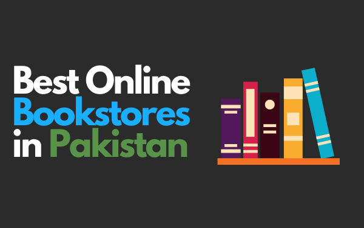
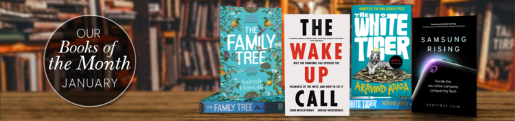

HOME
ABOUT
CONTACT
PRICING
SHOP
HOME
ABOUT
CONTACT
PRICING
SHOP

12 Best Online Bookstores in Pakistan for New, Cheap and Used Books (2024)


Hey!
Are you a bibliophile? Bookworm? A reader by heart? Or anyone who’s willing to develop a reading habit?
Then this blog is for you.
It will take you to the best online bookstores in Pakistan. These eStores are best to get your
educational, academic, new books, used books, and more.
Let’s get started:
Liberty Books

Liberty is Pakistan’s largest and one of the best online bookstores with ten outlets in the country. It was
started in 1952 in Karachi and now has a presence all over Pakistan. From fiction to nonfiction, children
and Urdu books, it has a diverse variety of 90,000 titles ready to deliver to your home. The driving force
behind Liberty is to create a well-read nation and that’s why they are always up to serve your orders
online. If any book isn’t available, you can also request the book on their website.
.png)
‘Readings’ is also the largest online book resource in Pakistan. It was started in 2006 as a local shop in
Lahore that sold used books but now its mission has expanded all over the country. They make delivery
possible at affordable prices. Whether you want old or new books, you can shop on their website and
place your order. With a range of 70+ categories available, you can choose your best pick. If in case, you
don’t find your specific read, leave a request on their site. You can also order via telephone, email or
SMS.
- Best for Biographies, Autobiographies, Science, Religion, Politics, Literature
- Shipping Charges: Free on orders of Rs, 500 or above.
- Website: www.readings.com.pk
Saeed book bank is the leading online bookseller in Pakistan it was established in 1955 to work for the
spread of knowledge in the best possible way. It’s a top-rated and one of the old book sites in Pakistan
that have a wide collection of books in all genres. From philosophy, and fiction to cultural history and
academics, their humongous collection is the go-to spot for many readers in Pakistan. Even if you don’t
find the book of your choice, you can send a special request to them on their online portal. It’s a widely
popular and oldest bookstore in Pakistan.
- Best for: All kind of books
- Shipping Charges: Free on orders of Rs, 1000 and above.
- Website: www.saeedbookbank.com